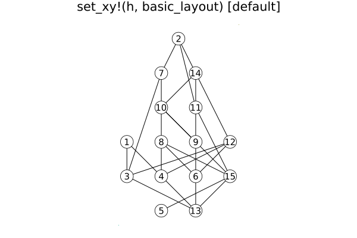
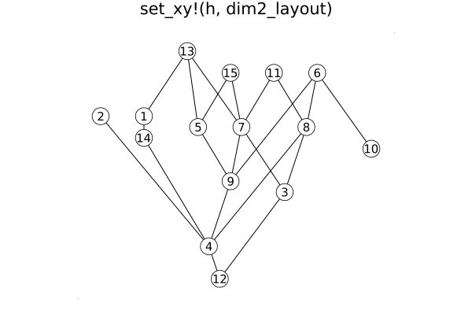
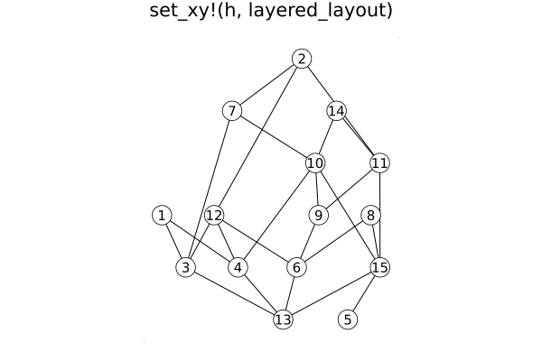
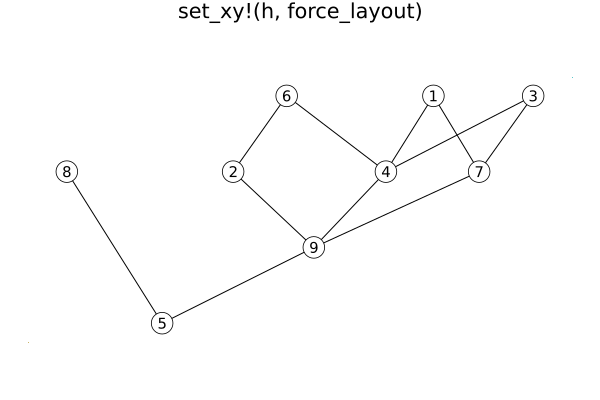
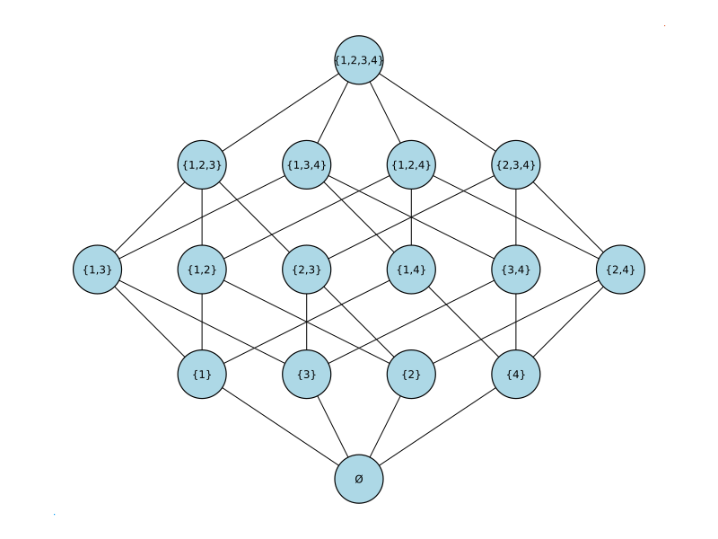

HasseDiagrams
Hasse diagrams are drawings of posets (partially ordered sets).
Basic Usage
To create a Hasse diagram for a Poset and draw it on the screen, do this:
julia> using Posets, HasseDiagrams
julia> p = subset_lattice(3)
{8, 19} Int64 poset
julia> h = HasseDiagram(p)
Hasse diagram of a {8, 19} Int64 poset
julia> draw(h)Note that
hcontains a copy ofp, so subsequent changes topare not reflected inh.
Creating a Layout
When a Hasse diagram is created, it is given a default layout. Hasse diagrams can be given an alternative layout with the function set_xy!. There are two forms:
set_xy!(h, method)uses the functionmethodto compute the layout. The function acts on the posets held insideh. The list of available layout methods is in the next section.set_xy!(h, xy)uses the dictionaryxyto site the vertices. Vertexvis placed atxy[v]. Ifvis not a key ofxy, then its location is unchanged.
Scaling
The function scale!(p,μ) multiplies all coordinates in the embedding by μ. It is likely more useful just to multiply the x- or y-coordinates; to do so, use scalex! or scaley!, respecitvely.
Layout Methods
basic_layoutplaces vertices vertically based on their rank and, within each rank, the horizontal placement is evenly spaced.dim2_layoutis a decent layout function that is applicable to posets whose dimension is at most two. Reasonbly quick. If the poset has dimension greater than two, a reasonable alternative is presented.layered_layoutis a Sugiyaqma style layout from the LayeredLayouts module. Can be slow.force_layoutis an experimental layout method in which edges of the cover graph act like springs, all vertices repel each other, and levels are determined bydual_ranking.
Layout Examples
Results for a randomly generated two-dimensional poset:




Properties
Font size
- Use
set_font_size!(h, sz)to set labels to beszpoints. Use0to hide labels. Default isFONT_SIZE = 10. - Use
get_font_size(h)to determine the current font size forh.
Node radius
- Use
set_radius!(h, r)to set the size of the circles that represent the elements of the poset. Default isRADIUS = 12. - Use
get_radius(h)to determine the current radius.
Fill color
- Use
set_fill_color!(h, c)to set the fill color for the circles toc. Default isFILL_COLOR = :white. All circles are filled with the same color. - Use
get_fill_color(h)to determine the current color.
Example
Here is an example for drawing (small) subset lattices with sensible labels. Here is the function to produce the picture:
using Posets, HasseDiagrams, SimpleDrawing, ShowSet
function draw_bool(k)
p = subset_lattice(k)
h = HasseDiagram(p)
labs = Dict{Int,String}()
for v in 1:nv(p)
labs[v] = string(subset_decode(v))
end
set_labels!(h, labs)
set_font_size!(h, 8)
set_radius!(h, 30)
set_fill_color!(h, :lightblue)
set_xy!(h, layered_layout)
draw(h)
expand_canvas() # from SimpleDrawing
endHere is the result of draw_bool(4):

Extra Control: Drawing Objects
Much greater control of the appearance of a HasseDiagram can be achieved using the make_objects function. The input to make_objects is a HasseDiagram and the output is a list of Segment and Point objects from SimpleDrawingObjects. This list begins with Segment objects representing the edges of the HasseDiagram following by Point objects representing the vertices. This allows the user to specify various attributes for the objects. For example, this would enable changing the colors of selected vertices (as opposed to using set_fill_color! which sets all vertices to the same color).
Note that modifying the objects in the output of make_objects(h) does not modify h or its attributes. It simply gives a list of objects that can be individually modified.